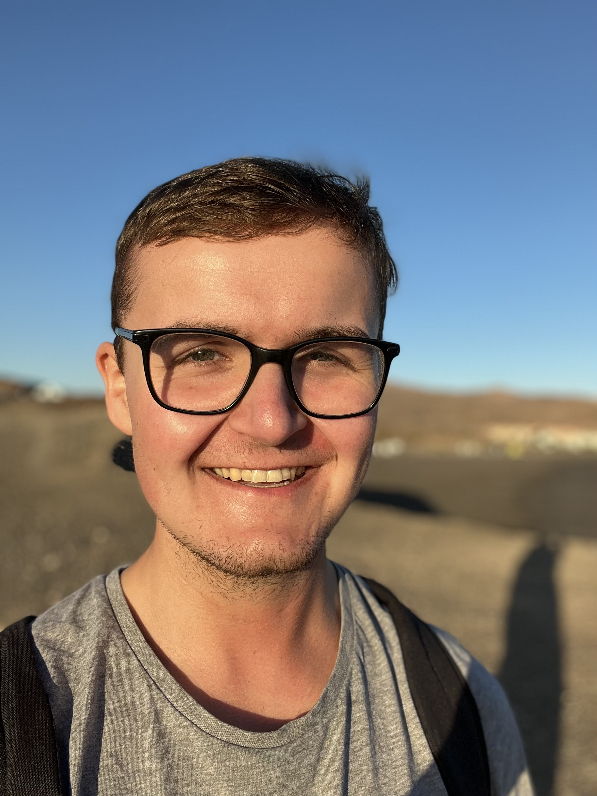

Niklas Koeppe

Hi! I am Niklas, an integrated MS/PhD student in Brain and Cognitive Engineering at KAIST, advised by Prof. Sang Wan Lee. I study how artificial agents can keep learning as their environments change.
My research focuses on continual reinforcement learning and neural network plasticity. I am especially interested in simple architectural changes that help agents adapt to new experiences while retaining what they have learned.
Before KAIST, I studied Artificial Intelligence at Radboud University in the Netherlands and spent an exchange semester at Sungkyunkwan University. I also worked as a research intern at Microsoft Research Asia.
Feel free to get in touch if you would like to talk about research or collaborate.
research interests
I work at the intersection of reinforcement learning, continual learning, and computational neuroscience. A recurring question is how an agent can preserve useful knowledge while remaining able to change when the world changes.
- Continual reinforcement learning: learning across task shifts and long training horizons without losing the ability to adapt.
- Architectural plasticity: designing neural networks whose structure supports both stability and new learning.
- Adaptive computation: deciding when to compute, reuse, or skip internal processing.
⤷ keywords
continual learning, reinforcement learning, plasticity, adaptive architectures, computational neuroscience
news
Presented “Mitigating Plasticity Loss through Architectural Design in Continual Learning” at ICML 2026 in Seoul.
Started a research internship at Microsoft Research Asia, working on continual reinforcement learning.
selected publications
-
ICML 2026
Mitigating Plasticity Loss through Architectural Design in Continual Learning
Proceedings of the 43rd International Conference on Machine Learning, 2026
selected projects
Interpolation Layers
A layer design that combines a stable reference pathway with a learnable projection to support adaptation during continual learning.
Dynamic time perception for reinforcement learning
Exploring whether agents can save computation by skipping internal updates when the environment changes slowly.
background
KAIST · Integrated MS/PhD in Brain and Cognitive Engineering
Microsoft Research Asia · Research intern
Radboud University · BSc in Artificial Intelligence, cum laude
Sungkyunkwan University · Exchange in Applied Artificial Intelligence
outside research
I enjoy cycling, running, languages, travel, and reading about politics and behavioral science. I am from Germany and currently live in South Korea.
nkoeppe@kaist.ac.kr · Daejeon, South Korea